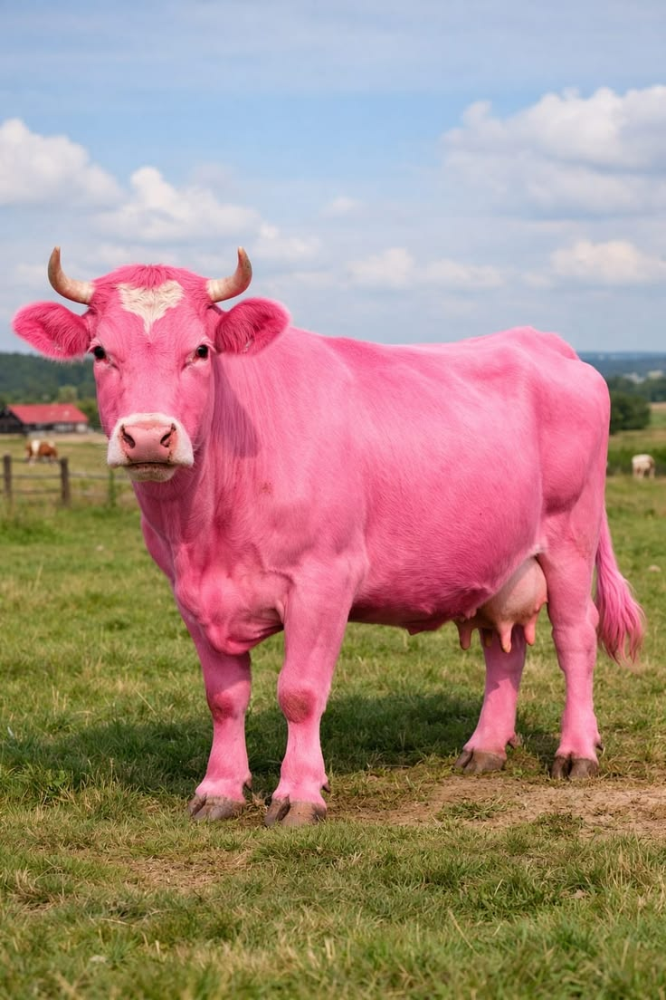

First we will build a cow chatbox that will moo like a cow for the aesthetics of it. Cow GPT will use primarly software and black magic. If future hack clubbers can build this with me and join my cult I mean company a lot of money will come. We will have solar power, and very questionable science because at a certain point we will make magic. Welcome to CowGPTwarts
AI milk is made when the Cow GPT produces offsprings of the GPT. We will use that milk of the mother gpt. We will use advanced alorgrithms and AI prompts to generate the milk from your computer. Once we deploy and release the gpt will be eating the prompts and producing and milk. Unlike tradtional cows we will get your strawberry milk from the computer so we dont have to waste resources to buy a pink cow.

Once deployed there will be new features that will be updated every month. Future updates could include but not limited too lactose free AI milk, and a prenium subscription for only $2000 a month they can get faster responses and early access to different flavors and gpt cows.
By 2035, the goal is too elimanate farming and cut down emissons by so much. To subscribe for updates or to be an investor send an email to lizstrut1@gmail.com